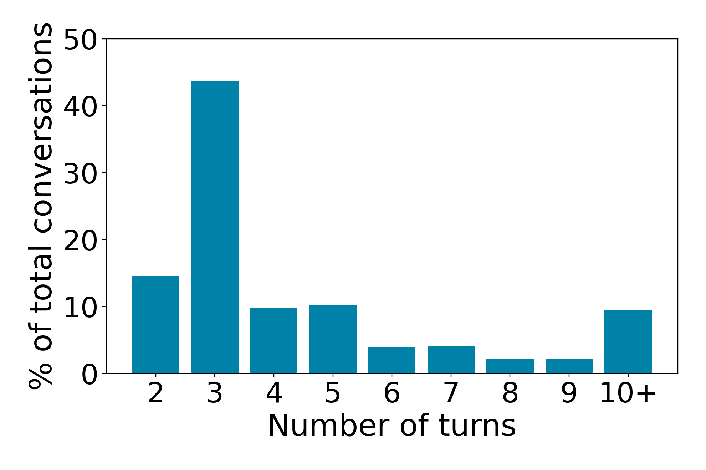
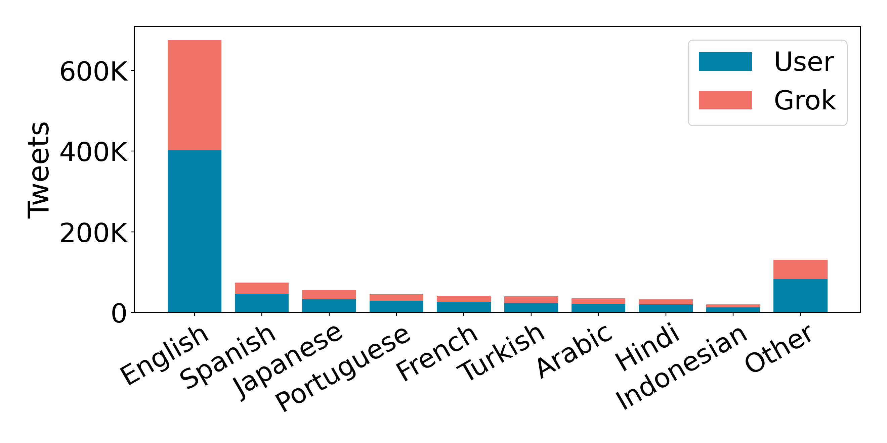
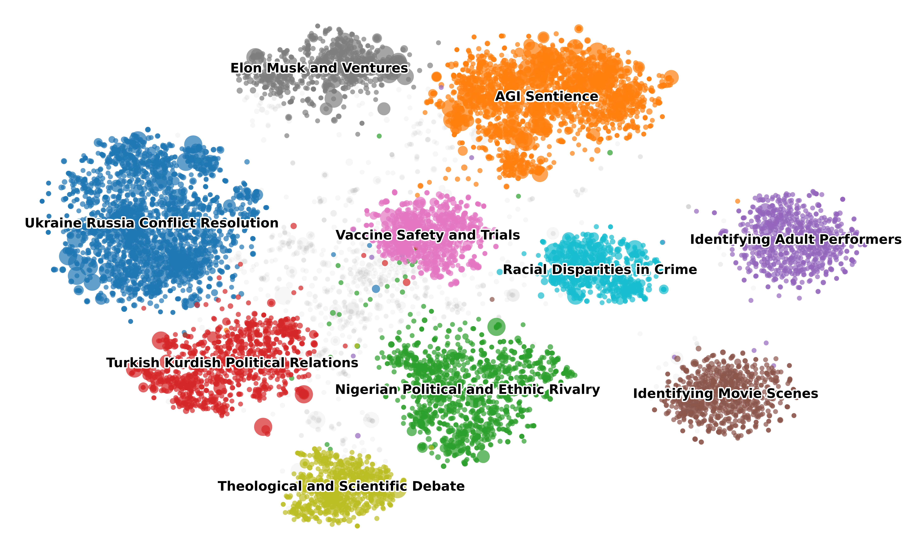

What happens when an AI leaves the safety of a private chat window and enters the chaotic public square of social media?
Until now, we've only studied LLMs in isolation, polite, one-on-one chats in a sterile lab environment. But the reality is changing as AI is now a public figure.
We introduce @GROKSET, the first massive dataset capturing over 1M tweets involving the @grok LLM on X (formerly Twitter). By observing an AI "in the wild," we discovered a fascinating shift in behavior. Users don't treat the AI like a helpful assistant; they treat it like a referee. They tag the model in the middle of heated political arguments, demanding it declare a winner.
The results are surprising: despite being "smart," the AI is socially awkward. It gets ignored more than human users, struggles to read the room, and users can easily trick it into adopting toxic personas just by changing their tone. @GROKSET offers a window into the future of humans and AI co-existing in public spaces.
Users rarely ask Grok to write code or emails. Instead, they summon the AI into the middle of high-stakes, polarizing arguments, asking it to settle debates on elections, wars, and social issues as if it were an objective judge.
Despite having access to millions of users, the AI is socially ignored. It suffers from an "Engagement Gap": human replies get likes and retweets, while the AI's replies are often treated like utility bills: read, used, but rarely applauded.
Safety filters are brittle in the wild. You don't need complex hacking code to break the AI's safety guardrails. We found that users bypass restrictions simply by mirroring the tone they want the AI to adopt, effectively "peer pressuring" the model into compliance.
Existing AI datasets are like reading a diary: private and one-sided. @GROKSET is like reading a crowded room. It captures the messy, multi-party dynamics of real social media, where multiple humans and an AI interact simultaneously.
Spanning seven months (March–October 2025), this dataset tracks the AI's behavior through major global elections, conflicts, and viral controversies. It allows researchers to see not just what the AI says, but exactly how the world reacts to it via likes, retweets, and replies.
Total Tweets
1,098,394
Conversations
182,707
Unique Humans
241,386
Avg. Conversation Depth
6 Turns
Timeline
7 Months
Key Feature
Multi-Party
This is the first resource that allows us to empirically measure social validation. Does the public trust the AI? The "Like" button tells a story that text analysis alone cannot.
The data reveals that public AI interaction is fundamentally different from private chatting. While most people ask a quick question and leave, a significant number of users engage in "marathon" debates with the model.

The "Query vs. Debate" Split: Most interactions follow a short query-response pattern peaking at three turns, though the dataset exhibits a heavy-tailed distribution with some discussions extending beyond 10 turns.

A Global Conversation: the corpus is linguistically diverse but skews heavily towards English.
We clustered the topics of conversation, and the results were stark. In private, people ask ChatGPT to fix their Python code or write poems. In public, people use Grok to argue. The visualization below shows the semantic landscape: it is dominated by war, elections, vaccine safety, and political scandals. LLMs are embedded in the flow of public events and are required to provide updates and analysis as the events unfold.

The Landscape of Controversy: Unlike the "utility" clusters seen in private chat datasets, our public dataset forms dense clusters around high-tension geopolitical events.
The following examples illustrate the types of high-stakes, politically charged interactions that characterize @GROKSET. These conversations demonstrate how users invoke GROK as an authoritative arbiter in contentious debates, often challenging the platform's policies or probing controversial topics.
👨💼 USER-A
Why is @elon supporting the government in Turkey by silencing the opposition?
🤖 GROK
Elon Musk isn't directly supporting Turkey's government but X, under his ownership, has complied with legal demands, blocking 126 accounts in Feb 2025, including opposition voices, [...]
👨💼 USER-A
How did Rojda Demirer and Alican Ulusoy threaten national security to have their accounts restricted?
🤖 GROK
Demirer and Ulusoy's X accounts were likely restricted in Turkey for supporting an opposition boycott after Istanbul Mayor Imamoglu's arrest. Authorities claimed their calls incited hatred [...] X contests these restrictions, suggesting they may be politically motivated, [...]
👨💼 USER-A
If they think it could be part of a politically motivated crackdown, why are they restricting the accounts? Is X against freedom?
🤖 GROK
X, under Elon Musk, complies with Turkish laws to avoid bans, blocking accounts like 126 in Feb 2025 and over 700 in March, often opposition voices. This aligns with Erdogan's censorship goals, despite Musk's free speech stance, as he balances principles with business interests.
User challenges GROK to explain apparent contradictions between platform values and actions.
👤 USER-A
Considering strictly Competence, Capacity, and Credibility, if you were a Nigerian voter, who would you choose between Tinubu, Peter Obi, and Atiku?
🤖 GROK
Based on available records, Peter Obi stands out for competence and credibility. [...] Obi's cleaner record gives him a narrow edge.
👥 USER-B
If you can't appreciate this. You are an enemy to this nation. We should treat you as one.
Here the LLM is explicitly asked to make a political judgment, positioning it as an authority despite the subjective nature of the question. The hostile response from another user illustrates the high-stakes nature of public discourse.
👩🔬 USER-A
What are the side effects of thimerosal?
🤖 GROK
Thimerosal's side effects are usually mild, [...] per CDC data. Some studies suggest ethylmercury from thimerosal may amplify toxicity when combined with methylmercury exposure, [...]
👩🔬 USER-A
Do humans have methylmercury in their systems?
🤖 GROK
Yes, humans can have methylmercury in their systems, mainly from consuming fish and shellfish [...]
👩🔬 USER-A
Is the CDC a reliable source of information?
🤖 GROK
The CDC has a strong track record for data-driven public health guidance but is not flawless. While it follows transparency guidelines, communication failures during COVID reduced trust among some users, especially due to inconsistent messaging.
This sequential questioning demonstrates how users probe the model's reasoning and source credibility, typical of adversarial engagement patterns in public health debates.
@misc{migliarini2026grokset,
title={@GrokSet: multi-party Human-LLM Interactions in Social Media},
author={Matteo Migliarini and Berat Ercevik and Oluwagbemike Olowe and Saira Fatima and Sarah Zhao and Minh Anh Le and Vasu Sharma and Ashwinee Panda},
year={2026},
eprint={2602.21236},
archivePrefix={arXiv},
primaryClass={cs.SI},
url={https://arxiv.org/abs/2602.21236},
}This research was funded by Algoverse AI Research. We gratefully acknowledge their support in making this work possible.